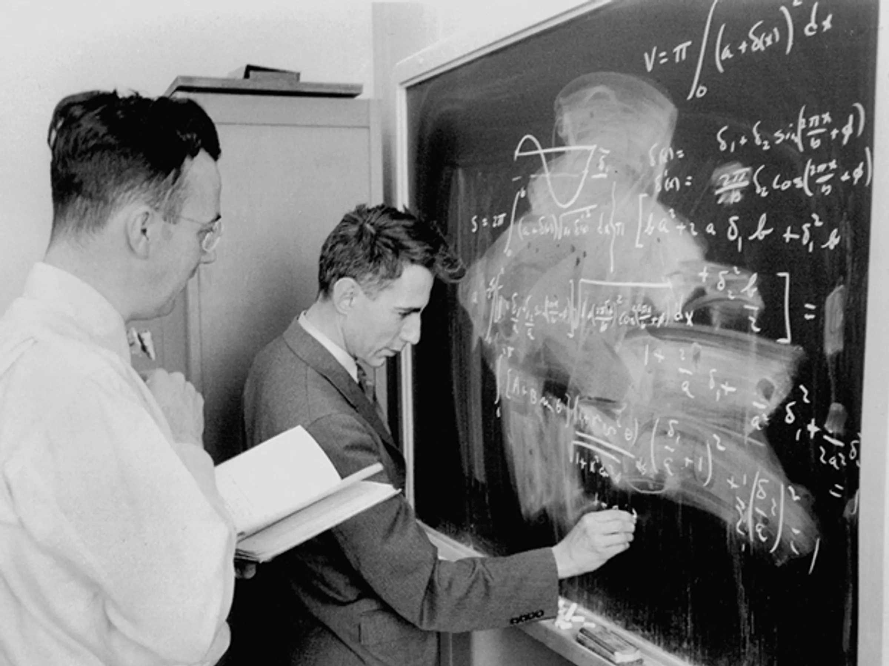

Course overview

Description
Information theory studies the mathematical foundations of compression and digital data transmission. Originally proposed by Claude Shannon in 1948, information theory not only establishes the fundamental limits of storage and communication, but also studies the codes that achieve these limits. Codes are data processing methods to reduce the probability of error for compressing an information source, and for transmitting information through a communication channel.
Information theory and coding have had a great impact on society in recent decades, facilitating the development of many applications in the digital information era: ZIP files, MP3 or JPG compression, ADSL, compact disc, mobile or satellite communication. Learn more about the life of Claude Shannon and the influence of his work in the information society:
The objectives of this course are exploring the basic concepts of information theory and coding, familiarizing with the mathematical models of information sources and channels, understanding the proof methodologies of the fundamental limits of source compression and data transmission, as well as the structure and operational meaning of codes. Relevant resources of the course include:
Learning guide Teaching guide Aula Global
Lecture notes
Evaluation
| Component | Weight | Description |
|---|---|---|
| Final exam | 60% | During the exam period. Contains theoretical questions and problems on all content covered in theory and seminars during the term. |
| Seminar deliveries | 15% | At the end of the session, in groups of 2–3 students, with solutions to problems according to each seminar's instructions. |
| Comprehension assignments | 15% | Throughout the course, individual, in written or audiovisual format according to each assignment's instructions. |
| Seminar-question competition | 5% | In the last week of the course, in groups of 2–3 students. Assessment considers problem preparation, solution development, and problem solving. |
| Kahoot questions | 5% | During theory sessions, to be answered individually. |
Schedule — Group T1
| Date | Time | Room | Session |
|---|---|---|---|
| Wed 25 Mar | 16:30–18:30 | 52.223 | Lecture 1 (theory) |
| Fri 27 Mar | 16:30–18:30 | 52.015 | Lecture 1 (seminar) |
| Wed 8 Apr | 16:30–18:30 | 52.223 | Lecture 2 (theory) |
| Fri 10 Apr | 16:30–18:30 | 52.015 | Lecture 2 (seminar) |
| Wed 15 Apr | 16:30–18:30 | 52.223 | Review session (topics 1–2) |
| Thu 16 Apr | 18:30–20:30 | 52.223 | Lecture 3 (theory) |
| Fri 17 Apr | 16:30–18:30 | 52.015 | Lecture 3 (seminar) — Assignment 1 due |
| Wed 22 Apr | 16:30–18:30 | 52.223 | Lecture 4 (theory) |
| Fri 24 Apr | 16:30–18:30 | 52.015 | Lecture 4 (seminar) |
| Wed 29 Apr | 16:30–18:30 | 52.223 | Lecture 5 (theory) |
| Thu 30 Apr | 18:30–20:30 | 52.015 | Lecture 5 (seminar) |
| Wed 6 May | 16:30–18:30 | 52.223 | Lecture 6 (theory) |
| Fri 8 May | 16:30–18:30 | 52.015 | Lecture 6 (seminar) — Assignment 2 due |
| Wed 13 May | 16:30–18:30 | 52.223 | Review session (topics 3–5) |
| Thu 14 May | 18:30–20:30 | 52.223 | Lecture 7 (theory) |
| Fri 15 May | 16:30–18:30 | 52.015 | Lecture 7 (seminar) |
| Wed 20 May | 16:30–18:30 | 52.223 | Lecture 8 (theory) |
| Fri 22 May | 16:30–18:30 | 52.015 | Lecture 8 (seminar) |
| Wed 27 May | 16:30–18:30 | 52.223 | Lecture 9 (theory) |
| Fri 29 May | 16:30–18:30 | 52.015 | Lecture 9 (seminar) — Assignment 3 due |
| Tue 2 Jun | 14:30–16:30 | 52.019 | Competition (preparation) |
| Wed 3 Jun | 16:30–18:30 | 52.223 | Review session (topics 6–9) |
| Fri 5 Jun | 16:30–18:30 | 52.015 | Competition (results & seminar) |
| Fri 19 Jun | 14:30–16:30 | 52.015 | Final exam |
Practice
Put your knowledge to the test! The exercises section contains practice problems with detailed solutions inspired by past seminars and exams, organized by topic. The interactive quiz features 20 multiple-choice questions covering all 9 topics of the course, with immediate feedback and a final score.